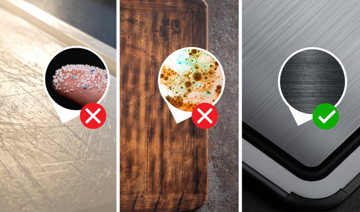
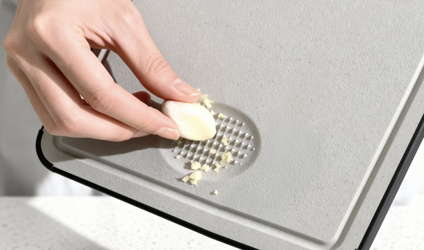

Updated July 2026
The cutting board debate is over. 50,000+ cooks picked titanium. The research says they're right.

The board is TIBO. Four tools in one: a medical-grade titanium cutting face, a produce side on the back, a knife sharpener in the handle, and a garlic grater set into the surface.
And the surface that touches your food doesn't shed plastic and doesn't soak in bacteria.
What the research proves
We read the studies on plastic, wood, and titanium: the microplastics measurements in Environmental Science & Technology (2023), USDA food-safety guidance, CDC illness estimates, and the UC Davis wood research from the 1990s. This is what each material leaves in the food you cut on it:
| What it leaves | Titanium | Plastic | Wood |
|---|---|---|---|
| Microplastics | None | 14–71Mparticles a year | None |
| Bacteria | None | In knife scars | In deep grooves |
Your plastic board is shedding
Picture a plastic board after a few months: scarred, stained, pale at the center. That material didn't wear off into thin air. It went into your food.
The research puts a number on it: roughly 50 grams a year, ten credit cards' worth of plastic, one meal at a time.
And board plastic is a recipe. Polyethylene plus the pigments, stabilizers, and antioxidants that keep it flexible and colorfast, and when the surface sheds, the recipe sheds with it.

Wood hides bacteria where you can't scrub
The naturally antibacterial claim is real, but it comes from a 1990s study using freshly cut boards in lab conditions.
Your board is not freshly cut. After a year of dinners and knife work:
- Grooves hold moisture and food particles below where a sponge reaches
- Raw-meat juices settle into the cuts, salmonella and all
- Once it is deeply scored, no amount of scrubbing reaches the bottom of the grooves
This is why food-safety guidance says to retire a scored board rather than simply continuing to wash it. The stakes aren't small: contaminated food sickens 1 in 6 Americans in a typical year.

Titanium prevents shedding and bacteria
No pores to soak anything in, no surface soft enough for a knife to shave. Titanium sheds nothing and absorbs nothing.
It is the raw-meat surface food-safety guidance describes.

TIBO's titanium does more than keep your food clean
Cleaner food is what got our attention. What kept it was the board itself, starting with the metal. It's Grade 2 titanium, 99% pure, the medical grade used for surgical implants and dental hardware because the body tolerates it and it never corrodes.
That puts it closer to a cast-iron pan or a good chef's knife than to a cutting board. You buy it once. It won't warp, rust, react, or wear out, and it outlasts the kitchen it sits in.
The kind of thing you hand down, not throw out.
Four tools, one motion
Raw meat goes on the titanium side. Flip it over, and the back face takes the salad: no second board to fetch, nothing crossing over.
A ceramic sharpener sits in the handle, so the knife is honed every time you pick it up. A grater is set into the surface for garlic, ginger, and zest.


Because titanium is softer than your blade, it sharpens the edge instead of dulling it. One board on the counter does the work of four tools in the drawer, and your knives get better for it.
"I'm an executive chef at a farm-to-table restaurant, and we're required to use commercial plastic boards at work for health code reasons. At home, I wanted something better."
"TIBO delivers restaurant-level hygiene (completely non-porous, impossible for bacteria to colonize) without the microplastic problem. The titanium is gentle on my expensive Japanese knives, softer than the cheap plastic boards we use at work. The weight is perfect: substantial enough to stay stable but not so heavy you can't move it around."
"What really impressed me: the ceramic sharpener is the same quality as the $80 standalone sharpener I used to recommend to my cooks. After eight months of heavy daily use prepping dinner for my family, it performs exactly like day one. This is what cutting boards should have been all along."
The best part: it's cheaper than the cheap boards
All of that, and it still comes out ahead on price. One titanium board replaces four tools for less than the cheap versions cost separately. A plastic board only cuts, so the sharpener, the grater, and a second board for raw meat all get bought on the side, and the board itself gets rebought as it wears out.
Five years with a cheap board
- Plastic board$20
- Replacement, year 2$20
- Replacement, year 3$20
- Replacement, year 4$20
- Knife sharpener$50
- Garlic grater$25
- Second board, for raw meat$40
One board, all four tools, and about $135 stays in your pocket.
Get TIBO forEstimated at today's retail prices, at one plastic board every 12 to 18 months.
Five years in, the cheap route has cost more than three times a single titanium board, and most of it isn't even boards. It's the pile of single-purpose tools a cheap one leaves you to buy, plus the next replacement already on its way.
Cleaner in your food, cheaper on your receipt, built to outlast both, and medical-grade for the price of a dinner out.
The people who switched aren't going back
Between the research, the math, and the metal, one board kept ending up on the right side of all three: TIBO's 4-in-1 titanium board. We'd recommend it, and it isn't a leap of faith.
TIBO 4-in-1 Titanium Cutting Board
$69.99$59.99Save $10
Bundles save more: buy 2 get 1 free, or buy 3 get 2 free, shipping included.
30-day money-back guarantee · return shipping covered · 1-year warranty
Use it for a month. If it isn't the last cutting board you buy, send it back for a full refund with shipping covered.